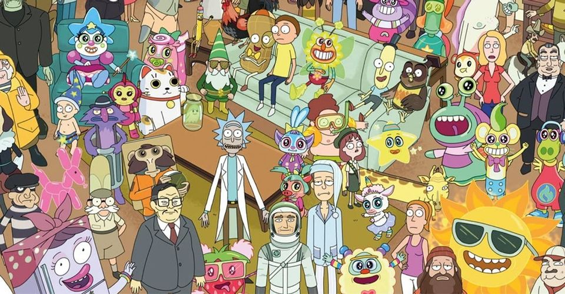

Like you see this isn't your regular recipes web page, but and Intergalactic web page
just like Intergalactic Cable, you know what I mean. Actually this is your pal
PAL YEaaaah !A friend of SMisths YEah! SMisths is a friend Squanchy!!! YEah.
Well I guess you wouldn't know.
Here is a pictures of us proving actually I'm friends with Rick. YEah!
